Summer 2023 (Not quite finished)
Before starting, I should say that all my knowledge is based on reading stuff from the internet, and some high school physics. Thus, there are probably inaccuracies in this article, and don't expect anything in particular to be correct. Also, the final results for this coil are very disappointing, simply because I ran out of time before I could test it with the proper capacitor to supply it with power, and thus the arcs I achieved were pathetically small. I do intend to work on it again after I have time though.
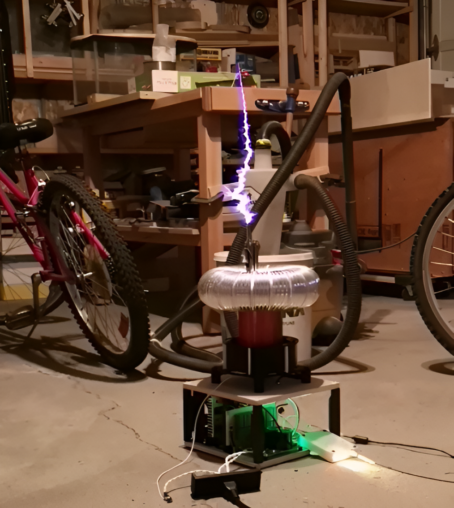The QCW tesla coil is a further development of the DRSSTC (dual resonant solid state tesla coil). Visually, it usually has a shorter and wider secondary coil compared to a regular SSTC or DRSSTC. They also typically make straighter and longer arcs than DRSSTCs. Some QCW coils are known to make sparks over ten times the length of their secondary coil.
Some technical characteristics are that they typically have higher coupling than a DRSSTC, with k being usually greater than 0.4-0.5, rather than the 0.2 and 0.3-ish for DRSSTCs and regular SSTCs. In addition, QCW coils often run at relatively high frequencies, usually over 400 kHz. They also usually have lower maximum primary current, which allows for probably the biggest difference: QCW tesla coils run in much longer, ramped pulses of power. Where a DRSSTC might run in 100µs pulses, a QCW gradually ramps up its output over 10-20ms. According to forum posts and other internet sources, this ramped power cycle, in combination with a high operating frequency allows the arc to grow much longer than those from a DRSSTC.
This ramped power cycle is typically achieved in a few different ways. A popular approach is to simply use a (very beefy) buck converter to ramp the inverter supply voltage. This method is relatively simple, and has been shown to work very well. A microcontroller controls a large MOSFET or IGBT, which basically PWMs a rectified-mains power supply, and then this is fed into an LC filter that outputs a relatively smooth, variable DC voltage. This can then be used to power the inverter.
The other method is to phase shift the drive signals for the inverter (this only works for full H bridge inverters). Essentially, in a normal full bridge, the left and right halves get signals which are out of phase by 180 degrees, but when modulating the power using phase shifting, this 180 degree phase shift can be modulated to vary the power going to the primary LC circuit. An advantage of this over changing the pulse width of each half of the H bridge, according to my understanding, is that it allows half the H bridge to still switch during a current zero crossing, which reduces strain on the transistors.
In the gif below, the top two lines represent the halves of the H bridge, and the bottom represents the output voltage.
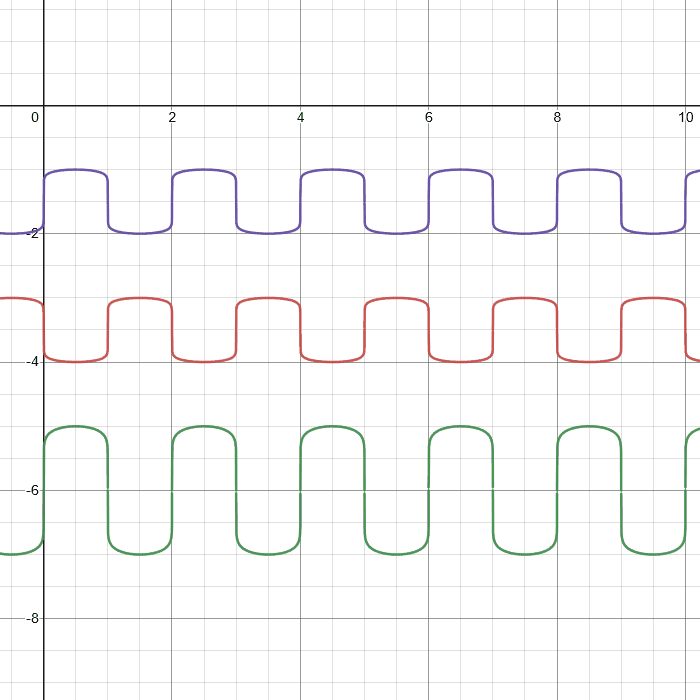In this case, the middle line is the one being phase shifted. This half of the H bridge will be "hard switching" (switching not during a current zero crossing), and will heat up much more. This can be a problem, and one method to solve this is to alternate the side that gets phase shifted. In some drivers such as the Simpledriver 2.3, the side which gets phase shifted can be set to alternate between every long pulse, or between every oscillation cycle. In my driver design, (which is partly based on the Simpledriver), I chose the latter.
On a side note, it seems that the Simpledriver's schematic link has gone down, but it can still be found on the wayback machine here.
The (slightly cursed) waveforms for this are shown below.
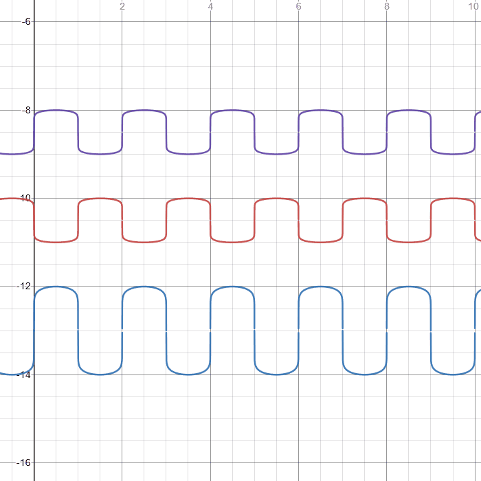This is essentially the same thing as before, but the two top lines are swapped every cycle.
In the Simpledriver, an FPGA + analog approach is used to variably phase shift the input signal. While this method certainly can work well, I thought that an easier way would be to just use the RP2040 microcontroller's PIO unit. My reasoning was that an RP2040 is much cheaper than an FPGA that could be used for this ($7.65 CAD for the XC9536, compared to $1.06 for the RP2040). I also thought that it could be more straightforward to design. (Also because I am already kind of familiar with the RP2040).
The RP2040 has two separate PIO peripherals, each consisting of a shared program memory (which holds a maximum of 32 instructions), and four state machines which can independantly run the shared program. There are only nine different instructions that the state machines can run, but this is sufficient for what I am doing.
The phase shift program essentially waits for an input state change, and then sets a counter which increments up to a certain value, which determines the amount of phase shift. After it reaches this value, it switches the output pin state. In addition, each time it counts, it makes sure that the input pin state has not switched a second time before it has finished counting. If it detects this, it immediately switches the output state. This is to ensure that it does not fall out of sync with the input, since that will almost certainly cause the tesla coil to catastrophically fail.
I also made another program to alternate the phase shift pins every cycle in PIO. The RP2040 has two PIO blocks, but I wanted to reserve one of them for the fiber optic IO, to control the driver. So I had two different programs that needed to be run from only one program memory bank.
A solution to this problem was to literally just put both programs into the same memory, but to ensure that they each had an unconditional jump to their starting points. The state machines can be set to start their program counters at a certain offset, so different state machines could run these different programs independantly. I did get pretty lucky though, since my two programs just happened to add up to exactly 32 instructions, which perfectly fit in the memory space.
PhaseSwapLag.pio:
.program PhaseSwapLag ; Phase shift program public PHASELAG: wait 0 pin 0 DELAY0: mov x osr ; copy OSR into X, so that if TX is empty, OSR does not change pull noblock DELAYLOOP0: jmp pin POSTDELAY0 jmp x-- DELAYLOOP0 POSTDELAY0: set pins 0 wait 1 pin 0 DELAY1: mov x osr ; copy OSR into X, so that if TX is empty, OSR does not change pull noblock DELAYLOOP1: ; if pin is low then return jmp pin SKIP1 jmp POSTDELAY1 SKIP1: jmp x-- DELAYLOOP1 POSTDELAY1: set pins 1 jmp PHASELAG ; Phase shift alternator program public HARDSWAP: jmp CHECK RETURN: jmp !y SWAP NOTSWAP: mov pins !pins jmp HARDSWAP SWAP: mov pins ::pins jmp HARDSWAP RISEDETECTED: set x 1 mov y !y ; we only need to flip y on the rising edge jmp RETURN side 0 FALLDETECTED: set x 0 jmp RETURN CHECK: jmp pin PINHIGH jmp PINLOW PINHIGH: jmp !x RISEDETECTED jmp RETURN PINLOW: jmp !x RETURN jmp FALLDETECTED jmp RETURN %c-sdk { void PhaseLag_program_init(PIO pio, uint sm, uint offset, uint input_pin, uint output_pin) { pio_sm_config cfg = PhaseSwapLag_program_get_default_config(offset); pio_gpio_init(pio, input_pin); pio_gpio_init(pio, output_pin); sm_config_set_in_pins(&cfg, input_pin); // for WAIT sm_config_set_set_pins(&cfg, output_pin, 1); sm_config_set_jmp_pin(&cfg, input_pin); sm_config_set_clkdiv(&cfg, 1.0f); // the higher the frequency the better here pio_sm_set_consecutive_pindirs(pio, sm, input_pin, 1, false); pio_sm_set_consecutive_pindirs(pio, sm, output_pin, 1, true); pio_sm_init(pio, sm, offset + PhaseSwapLag_offset_PHASELAG, &cfg); pio_sm_set_enabled(pio, sm, true); } void HardSwap_program_init(PIO pio, uint sm, uint offset, uint input_base, uint output_base) { pio_sm_config cfg = PhaseSwapLag_program_get_default_config(offset); pio_gpio_init(pio, input_base); pio_gpio_init(pio, output_base); pio_gpio_init(pio, input_base + 1); pio_gpio_init(pio, output_base + 1); sm_config_set_in_pins(&cfg, input_base); sm_config_set_out_pins(&cfg, output_base, 2); sm_config_set_jmp_pin(&cfg, input_base); sm_config_set_clkdiv(&cfg, 1.0f); pio_sm_set_consecutive_pindirs(pio, sm, input_base, 2, false); pio_sm_set_consecutive_pindirs(pio, sm, output_base, 2, true); pio_sm_init(pio, sm, offset + PhaseSwapLag_offset_HARDSWAP, &cfg); pio_sm_set_enabled(pio, sm, true); } %}
The phase lag program does use quite a few clock cycles each time it counts, so to have a decent resolution, the clock speed should be pretty high. This is fine though, since the RP2040 can be easily overclocked to around 420 MHz.
I scratched together a circuit, with some features taken from the Simpledriver, such as the output stage and some of the protection features. The main difference between mine and the SD was that (as mentioned before), mine did not use any analog components for the phase shifting.
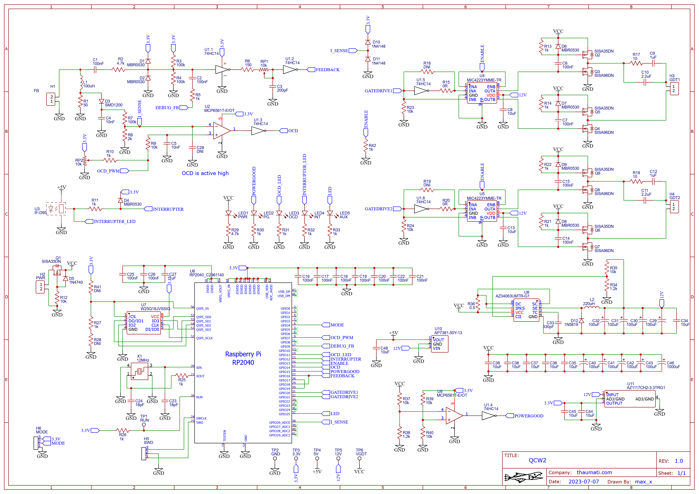This is the schematic I ended up using. This was the first attempt that I had actually built, and it has a few different issues. Heres the long list of problems I ended up having.
After these problems were addressed though, the board seemed to work fine.
Heres the unpopulated PCB.
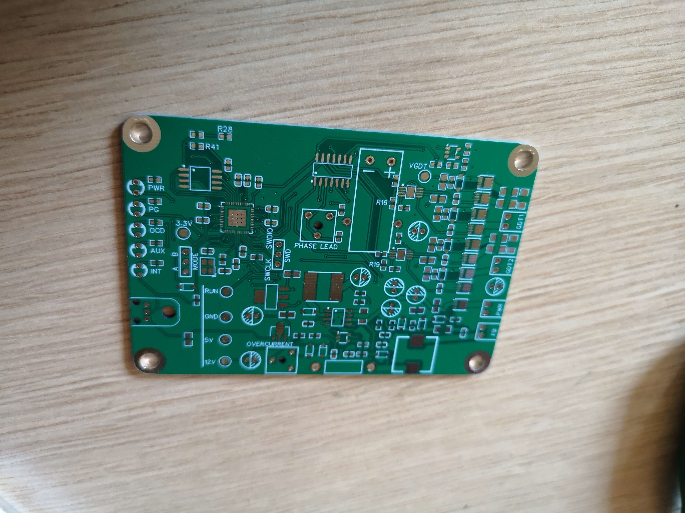And the assembled driver, in a foil lined 3D printed case.
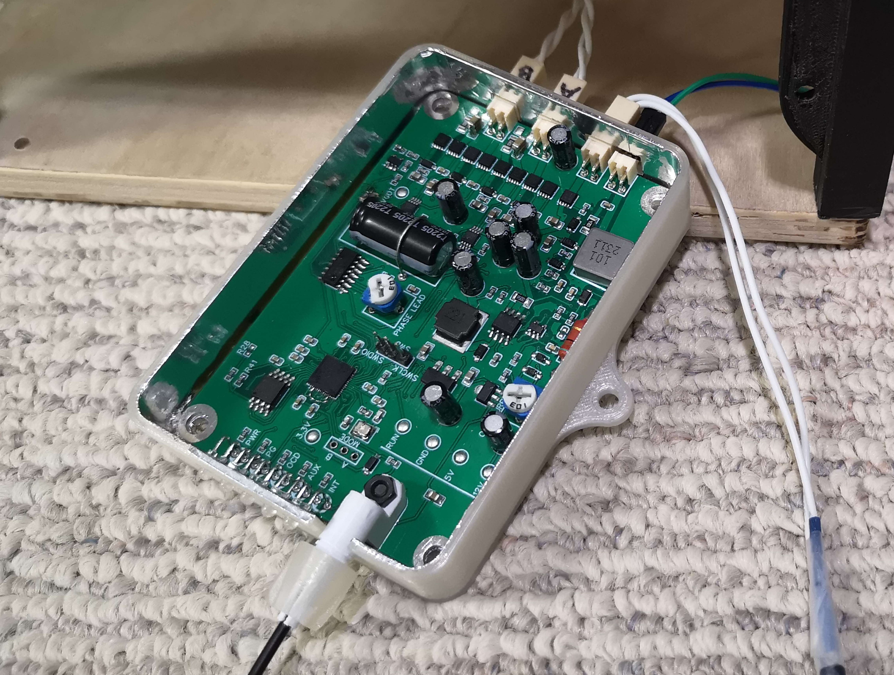I used my diy knockoff version of the IFD-95T fiber optic receiver. It is quite a bit cheaper than the real one.
Before actually doing anything in real life, I ran a quick simulation of the coil in a program called JavaTC. This helps to ensure that the geometry of the coil actually makes sense, and although the simulation is going to be quite inaccurate, it helps to ensure that the coil at least has a chance of working right.
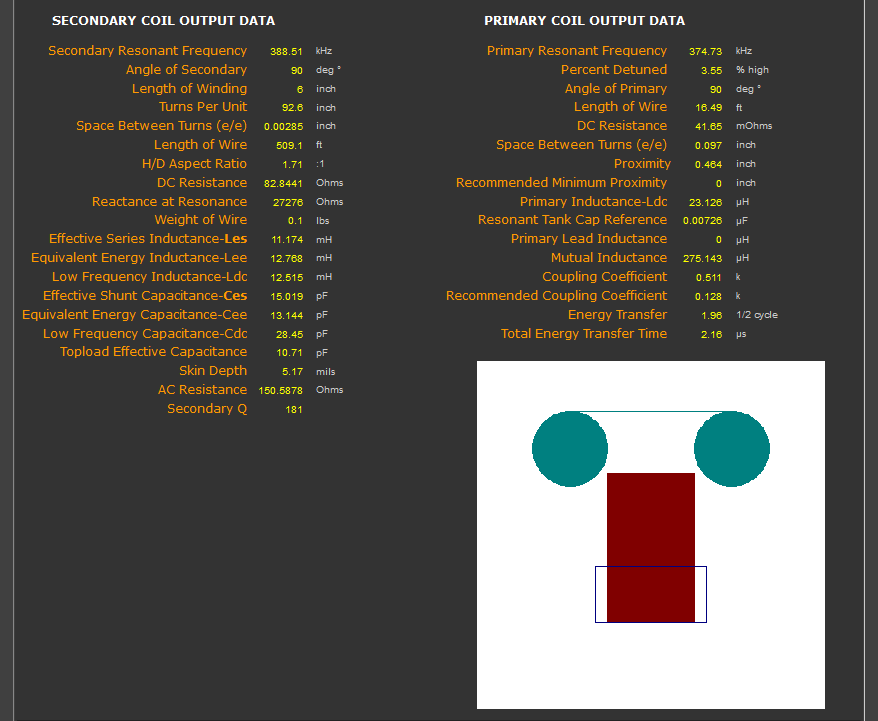I first started by cutting a 6" length of 3.5" O.D. ABS drain pipe. I then 3D printed some adapters, and hot glued together a little rig to help wind the coil. I used a stepper motor connected to a driver and microcontroller with a potentiometer, all just plugged into a breadboard.
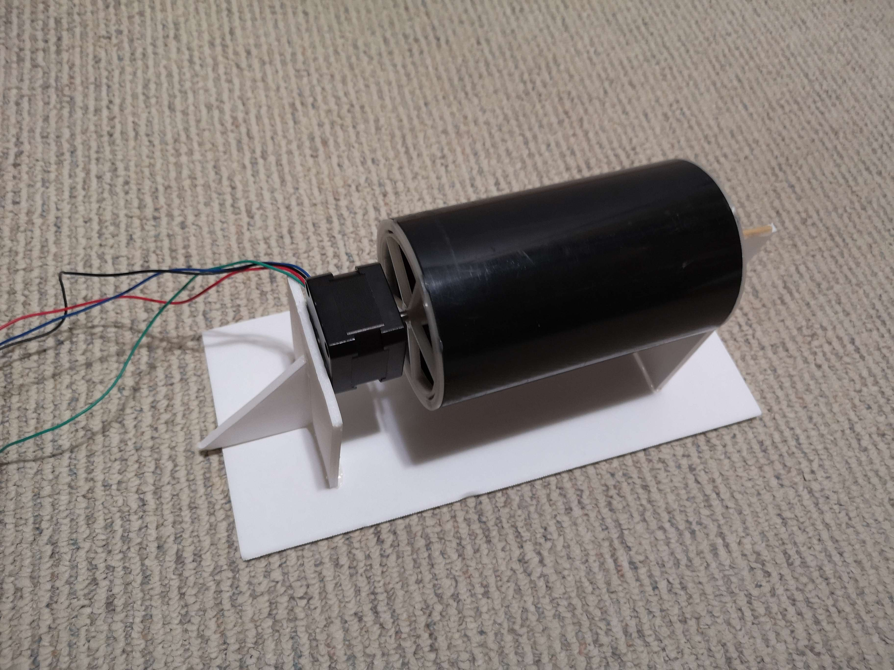Winding the coil was relatively quick using the motorized winding thing. I used roughly 200m of 32 AWG wire, resulting in around 750 windings. (Don't mind the messy desk).
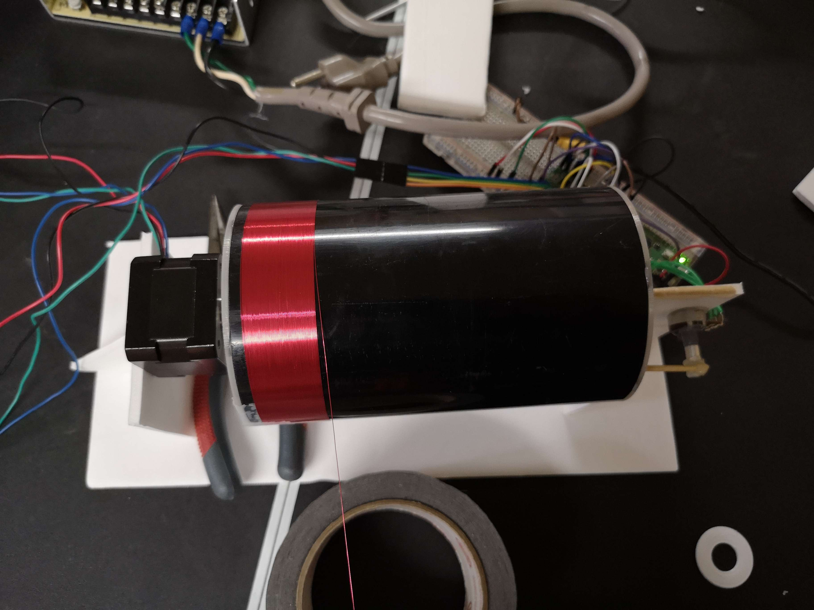After the coil was wound, I used some epoxy resin to encapsulate the entire coil. I just brushed it onto the coil, and left it to spin overnight. After that, it was solid enough not to move around on its own, so I just left it in the garage for a few days to fully cure.
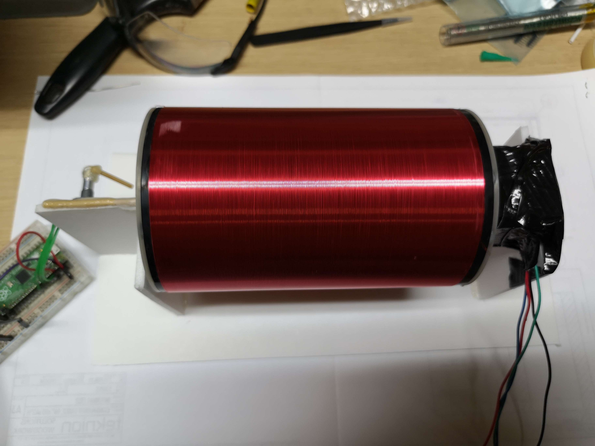Lastly, I 3D printed some end caps, and epoxied them on. For the bottom side, I soldered some thicker wire, and encased the joint in epoxy as I glued the rim on. For the top, I made an rhombus-like configuration of bare wire strands, to hopefully interface with the topload. The top cap also has a nylon bolt glued into it to allow the topload to simply screw on.
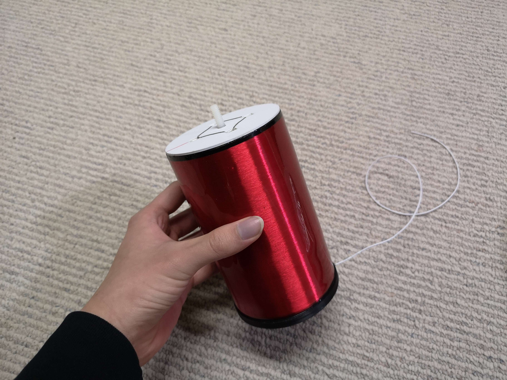This was relatively simple, I just 3D printed a frame to wind it on, and I just wound 14 turns of 14 AWG wire around it.
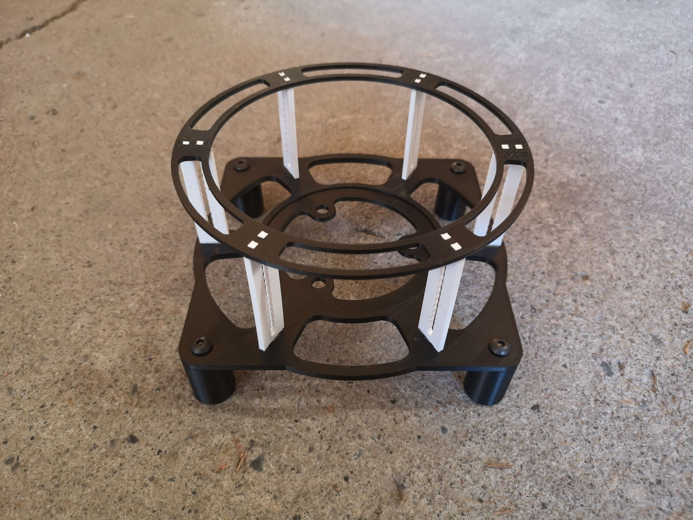The topload essentially helps increase the parasitic capacitance between the top of the secondary coil and the ground, lowering the resonant frequency. In addition, the sparks themselves can cause the resonant frequency to change, since they are essentially an extension of the topload. Having a larger topload helps reduce this effect. In my case, the topload was just a length of aluminum ducting pipe, bent into a circle, and taped together with foil tape. There are also some 3D printed circle pieces that screw together to clamp around the toroid, which also contains a nylon nut to screw onto the secondary coil. These 3D printed pieces were then covered in foil tape to make their surfaces conductive.
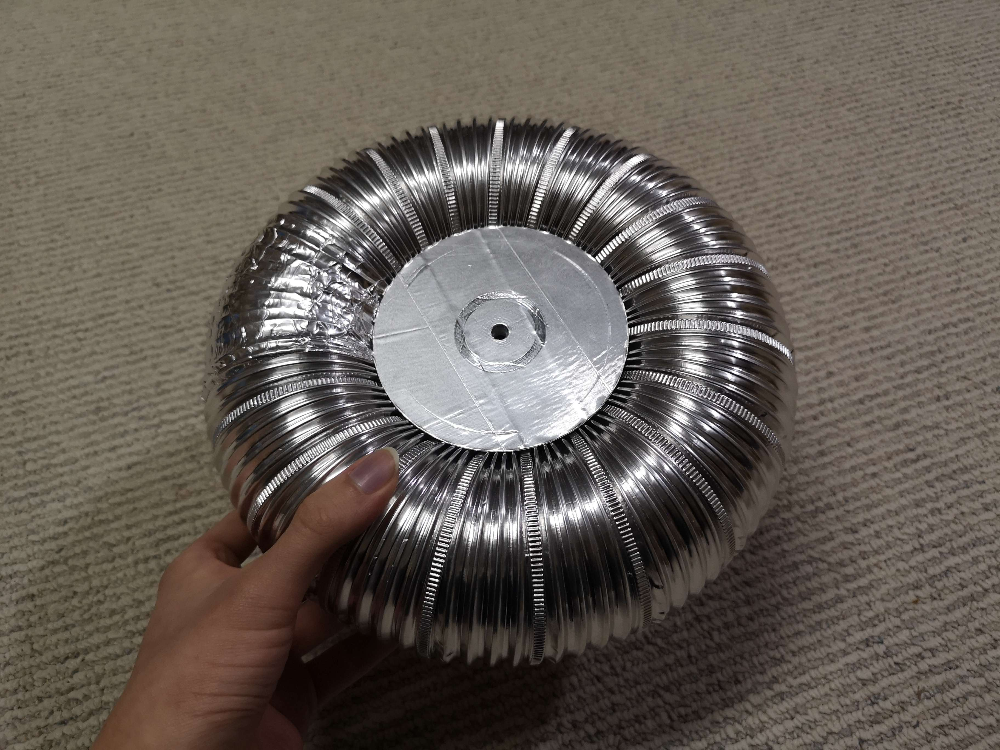Since this is a QCW DRSSTC, it needs a primary capacitor. This should be able to handle a lot of current and voltage, so having just one capacitor would require a very expensive capacitor. A simpler method is to just use a bunch of smaller ones. I ended up using a 10 series, 2 parallel bank of KEMET R76 39nF 2kVDC film capacitors. They seem to have different voltage ratings as a function of frequency, but according to the datasheet, they are "nominally" 700VAC rated. This actually seems to be for a different frequency, but for short durations I think it should be fine. The result is a 7.8nF, 7kVAC MMC.
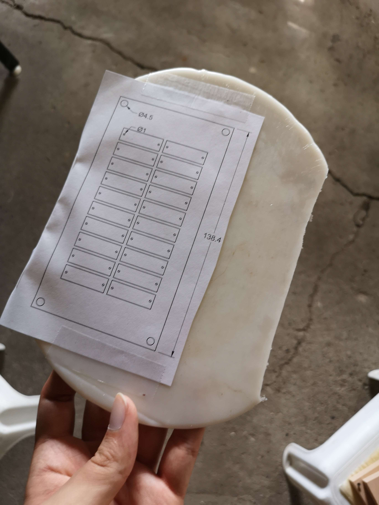I made the board by cutting out the design from a sheet of recycled milk jugs. (You can bake milk jugs in the oven, and press the plastic blob into a sheet).
I designed a small PCB for streamlining the build process of the inverter. (The PCBs are cheap from China, but the shipping is expensive... so ordering two or three different boards is basically the same price as ordering one). The board is kind of "inspired" by Loneoceans' EasyBridge... (its basically a knockoff of it).
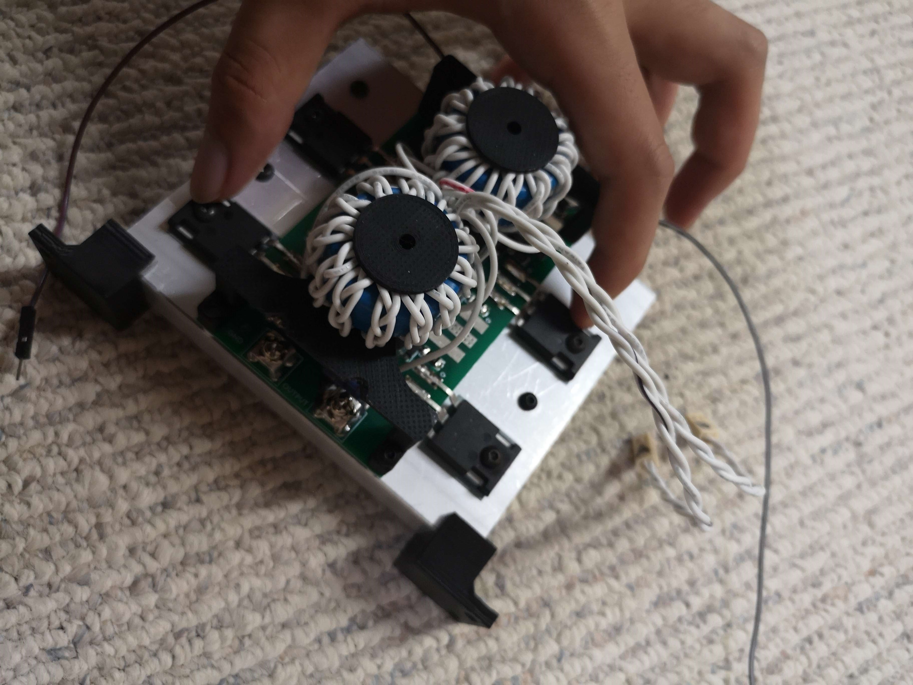Heres me pointing to the two IGBTs that died due to the GDT leakage inductance and poor output stage damping... (I only installed four IGBTs, although there can be four more for a double-full-bridge).
A "bandaid" solution is to add bidirectional TVS diodes across the gate and emitter of each IGBT.
I decided to use some Chinese branded IGBTs which I got from LCSC. The part number is "XD075H065CX1S3", and it appears to be kind of obscure on the western part of the internet. They are advertised as 650V, 75A IGBTs with 300A max pulse current. I think these ratings are pretty difficult to test, since a lot of tesla coils go over the maximum ratings anyway.
In addition to the items mentioned above, I also have a small cascaded feedback current transformer, and small board which has a voltage doubler rectifier and some decoupling capacitors. (Those are way too small though).
The driver is powered by a 95W HP laptop power supply that I got for cheap at a thrift store.
The Loneoceans website has a lot of very useful resources for this. Essentially, he concludes that it is optimal for the secondary resonant frequency to be initially greater than that of the primary, but operate the coil at the upper pole frequency.
This is something that I don't really understand, but if you have two resonant LC circuits, with the inductors partly coupled, the system will have two resonant frequencies that are different from the individual ones. With regular DRSSTCs, the coupling is quite low so the two resonant poles are relatively similar to the individual ones, but with a QCW, the coupling is much higher, and the pole frequencies are very different from the individuals.
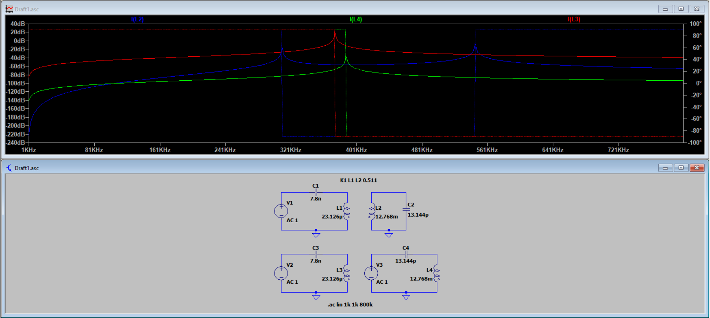This can be seen in the simulation here. The blue trace is the current in the secondary coil of the combined system, and the other two traces are the individual currents.
Loneoceans mentions that his coil will "default" to the lower pole when the primary frequency is lower than the secondary, but in my experience, there is a way around this.
If the oscillations are initially started by exciting the primary circuit at a certain pole frequency, when you ramp up the power, it will continue oscillating at the same frequency. This means that for my driver, I can set a gpio to toggle at the upper pole frequency, feed that into the power inverter while setting the phase shift to 10-20% power. This will cause the coil to oscillate at the upper pole (and without the need for ZCS, because of the low power setting), and after that, the gpio toggling can be turned off, and the power can be ramped to 100% for the classical "QCW" spark.
In many videos of QCW coils on the internet, they can be heard playing different notes. After asking around on some forums, I have concluded that this can be done by basically superimposing an audio waveform on top of the power ramp.
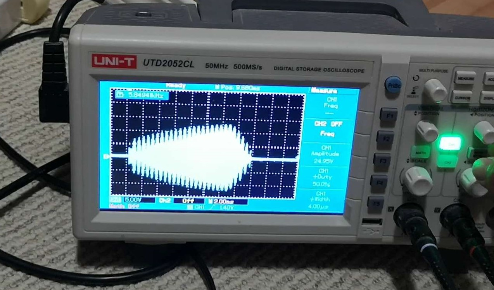Here is with audio modulation, and a light bulb as a series resistor to limit current in case something shorts.
And here is the same conditions but without the light bulb.
The real shame here is that I ran out of time for testing it before I acquired a large bulk capacitor, so the arcs are really small. I do intend to keep testing it once I have more free time though.
I had used quite a bit of resources from the internet, including various people's blogs and forum posts.
This site is about as close to a goldmine as you can get for this kind of stuff, and relevant to this project are his three QCW DRSSTC pages, in addition to his UD2.7 page, and the general DRSSTC ones as well.
Some features of the driver were taken from this design, such as the output stage, and the UVLO and other protections. It is also the one place which I got the ideas of the alternated phase shift, since Loneoceans' QCW 2 did not go into much detail about the phase shifting.
As mentioned previously, the schematic page link seems to be broken for the TQFP page, but it can still be found on the internet archive.
The people here seem to really know what they are doing, and when I had unanswered questions or ambiguities, they could almost always be answered here. In addition, some threads were especially helpful to read through.